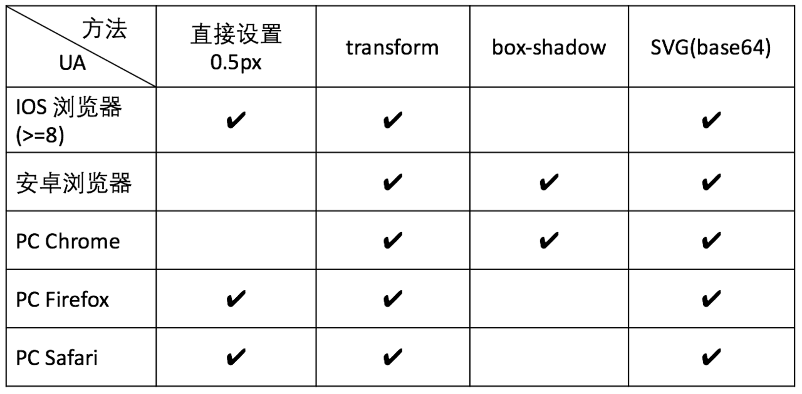

# 设备像素比
这一章来探讨一下 CSS 设备像素比。
- 设备像素比
- Viewport
- 移动端 1px 像素问题
# 设备像素比
设备像素比（devicePixelRatio）是设备上物理像素和设备独立像素的比例，即：设备像素比 = 物理像素 / 设备独立像素。在浏览器中可以通过 window.devicePixelRatio 获取。
问题又来了，物理像素和设备独立像素又是什么？
- 物理像素
- 设备独立像素
# 物理像素
物理像素是指像素点的多少，而不是指具体的物理尺寸。显示屏是由一个个物理像素点组成的，通过控制每个像素点的颜色，使屏幕显示出不同的图像，屏幕从工厂出来那天起，它上面的物理像素点就固定不变了。
我们常说的分辨率指的就是物理像素，比如 iphone6s plus 的分辨率是 1920x1080，表示横向有 1920 个物理像素，竖向有 1080 个物理像素。
# 设备独立像素
设备独立像素是一个虚拟的单位，独立于设备，是用于逻辑上衡量长度的单位，由底层系统的程序使用，会由相关系统转换为物理像素。
一种形象的说法，可以理解为在 css 中的 px。设备独立像素 = 逻辑像素 = CSS 像素
设备独立像素有什么用？
举个例子，iphone3 和 iphone4 的尺寸都是 3.5 寸，但 iphone3 的分辨率是 320x480，iphone4 的分辨率是 640x960，这也就是意味着同样长度的屏幕，iphone3 有 320 个物理像素，iphone4 有 640 个物理像素。
如果我们按照真实的物理像素进行布局，比如说我们按照 320 物理像素进行布局，到了 640 物理像素的手机上就会有一半的空白，为了避免这种问题，就产生了虚拟像素单位（设备独立像素）。
我们统一 iphone3 和 iphone4 都是 320 个虚拟像素，只是在 iphone3 上，最终 1 个虚拟像素换算成 1 个物理像素，在 iphone4 中，1 个虚拟像素最终换算成 2 个物理像素。
至于 1 个虚拟像素被换算成几个物理像素，这个数值我们称之为设备像素比。
提示
iPhone6 分辨率 750 x 1334（物理像素），设备独立像素 375 x 667，设备像素比为 2。
iPhone6 plus 分辨率 1242 x 2208（物理像素），设备独立像素 414 x 736，设备像素比为 3。
# Viewport
Viewport 是用户网页的可视区域。当我们开始使用平板电脑和手机上网时，固定大小的网页太大而无法容纳视口。为了解决这个问题，这些设备上的浏览器可以按比例缩小整个网页以适应屏幕。
窄屏幕设备在渲染页面流程：
- 首先在一个虚拟视口中渲染页面，这个视口通常比屏幕宽（通常是 980px）。
- 然后缩小渲染的结果，以便在一屏内显示所有内容。
- 最后渲染完成，用户可以移动、缩放以查看页面的不同区域。
案例
如果移动屏幕的宽度为 640px，则可能会用 980px 的虚拟视口渲染页面，然后缩小页面以适应 640px 的视口大小。
这样做是因为许多页面没有做移动端优化，在小窗口渲染时会乱掉（或看起来乱）。所以，这种虚拟视口是一种让未做移动端优化的网站在窄屏设备上看起来更好的办法。
# 自定义视口
一个典型的针对移动端优化的站点包含类似下面的内容：
<meta
name="viewport"
content="width=device-width, initial-scale=1, user-scalable=no"
/>
2
3
4
content 中可以指定以下内容：
- width：控制 viewport 的大小，可以指定的一个值，如 600，或者特殊的值，如 device-width 为设备的宽度（单位为缩放为 100% 时的 CSS 的像素）。
- height：和 width 相对应，指定高度。
- initial-scale：初始缩放比例，也即是当页面第一次 load 的时候缩放比例。
- maximum-scale：允许用户缩放到的最大比例。
- minimum-scale：允许用户缩放到的最小比例。
- user-scalable：用户是否可以手动缩放。
# 移动端 1px 像素问题
移动端 1px 像素问题是什么？
举个例子，iphone6 的屏幕宽度为 375px，设计师做的视觉稿一般是 750px，也就是 2x 图，这个时候设计师在设计稿上画了 1px 的边框，如果你在 css 中也写了border-width: 1px，那么问题就出现了。
根据上文介绍，iphone6 的设备像素比是 2，这里的物理像素是 1px（根据设计稿上 1px），由此我们可以计算出设备独立像素（css 像素）。
// 设备独立像素（css 像素）= 物理像素 / 设备像素比。
设备独立像素 = 1px / 2 = 0.5px;
2
根据计算出的设备独立像素（css 像素），我们在 css 中应该写border-width: 0.5px，但 css 并不支持直接写 0.5px，于是就出现了各种 hack 方法。
下面会介绍几种常用的编写 0.5px 的方式。
- 使用缩放
- 使用线性渐变
- 使用 boxshadow
- 使用 svg
- 使用 viewport
# 使用缩放
使用缩放可以很完美地兼容各种浏览器。
<style>
.hr.scale-half {
height: 1px;
transform: scaleY(0.5);
/* importrant */
transform-origin: 50% 100%;
}
</style>
<p>1px + scaleY(0.5)</p>
<div class="hr scale-half"></div>
2
3
4
5
6
7
8
9
10
TIP
注意要加上这段代码：transform-origin: 50% 100%;，不然会出现虚化效果。
# 使用线性渐变
linear-gradient(0deg, #fff, #000)的意思是：渐变的角度从下往上，从白色#fff 渐变到黑色#000，而且是线性的，在高清屏上，1px 的逻辑像素代表的物理像素有 2px，由于是线性渐变，所以第 1 个 px 只能是#fff，而剩下的那个像素只能是#000，这样就达到了画一半的目的。
<style>
.hr.gradient {
height: 1px;
background: linear-gradient(0deg, #fff, #000);
}
</style>
<p>linear-gradient(0deg, #fff, #000)</p>
<div class="hr gradient"></div>
2
3
4
5
6
7
8
经过测试，这种方法在各个流览器上面都不完美，效果都是虚的，和完美的 0.5px 还是有差距。这个效果和直接 scale 0.5 的差不多，都是通过虚化线，让人觉得变细了。
# 使用 boxshadow
<style>
.hr.boxshadow {
height: 1px;
background: none;
box-shadow: 0 0.5px 0 #000;
}
</style>
<p>box-shadow: 0 0.5px 0 #000</p>
<div class="hr boxshadow"></div>
2
3
4
5
6
7
8
9
经过测试，这个方法在 chrome 和 firefox 都非常完美，但是 safari 不支持小于 1px 的 boxshadow，所以完全没显示出来了。
# 使用 svg
使用 svg 的 line 元素画线，stroke 表示描边颜色，默认描边宽度 stroke-width="1"，由于 svg 的描边等属性的 1px 就是物理像素的 1px，所以就相当于高清屏的 0.5px。
<style>
.hr.svg {
/* 直接使用svg */
background: url("data:image/svg+xml;utf-8,<svg xmlns='http://www.w3.org/2000/svg' width='100%' height='1px'><line x1='0' y1='0' x2='100%' y2='0' stroke='#000'></line></svg>");
/* 使用 base64 格式的svg，解决 firefox 兼容性问题 */
background: url("data:image/svg+xml;base64,PHN2ZyB4bWxucz0naHR0cDovL3d3dy53My5vcmcvMjAwMC9zdmcnIHdpZHRoPScxMDAlJyBoZWlnaHQ9JzFweCc+PGxpbmUgeDE9JzAnIHkxPScwJyB4Mj0nMTAwJScgeTI9JzAnIHN0cm9rZT0nIzAwMCc+PC9saW5lPjwvc3ZnPg==");
}
</style>
<p>svg</p>
<div class="hr svg"></div>
2
3
4
5
6
7
8
9
10
经过测试，这个方案也是很完美，但是在 firefox 挂了，究其原因是因为 firefox 的 background-image 如果是 svg 的话只支持命名的颜色，如"black"、"red"等，如果把上面代码的 svg 里面的#000 改成 black 的话就可以显示出来，但是这样就很不灵活了。于是只能把 svg 转成 base64 的形式。
我们来看一下上面几种方法的兼容性对比图。

# 使用 viewport
最后还有一个万能的方法，那就是通过控制 viewport。在 viewport 中 width=device-width 表示将 viewport 视窗的宽度调整为设备的宽度，这个宽度通常是指物理上宽度。默认的缩放比例为 1，如果知道设备像素比，就能计算出需要缩放的比例，实现 0.5px 的效果了。
在实际项目中，首先通过 js 获取 devicePixelRatio，然后动态修改 viewport 中的缩放比例。例如：devicePixelRatio = 2 的时候，控制 viewport 的 initial-scale 值为 0.5 进行缩放。
<meta name="viewport" content="initial-scale=0.5, user-scalable=no" />
devicePixelRatio = 3 的时候：
<meta name="viewport" content="initial-scale=0.333333, user-scalable=no" />
可以看到，使用 viewport 的方式简单粗暴，对业务代码没有侵入性，推荐大家使用。